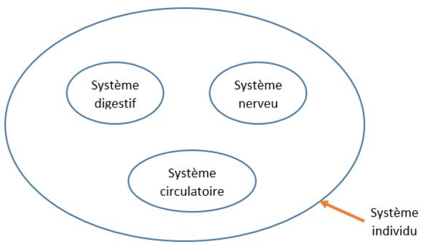

Dernière mise à jour: 07 Aout 2024
Pourquoi les bases de données ?
Introduction
Si vous avez cliqué sur le lien qui mène à cette page, c'est que vous voulez savoir c'est quoi les bases de données. Et croyez-moi, vous êtes au bon endroit. Nous allons, pas à pas, découvrir c'est quoi les bases de données et à quoi ça sert. Ce que je vous propose, c'est de partir de ce que vous savez déjà pour savoir ce que vous ne savez pas. Vous acceptez ? D'accord, allonz-y !
Pour commencer, pourquoi les bases de données ?
Les bases de données nous permettent d'étudier un système.
C'est-à-dire ?
Ah oui, vous avez raison. ça mérite plus d'explication. D'abord, voyons c'est quoi un système ? Un système est un tout constitué d'éléments. Par exemple, on peut considérer un individu (vous par exemple), comme étant un ensemble de systèmes. En effet, un individu est constitué de plusieurs éléments: système respiratoire, système cardiovasculaire,... De plus, chaque système est constitué de plusieurs éléments: cellules, tissus, orgqnes. Vous comprenez maintenant c'est quoi un système ?
Voici un second exemple: l'entreprise en tant que système. L'entreprise est aussi constituée de plusieurs éléments (domaines, services, départements...) qui communiquent entre eux pour former un tout.
Maintenant, revenons sur l'individu (qui est un ensemble de systèmes). Vous savez que l'individu est un être très complexe, c'est pourquoi pour faciliter son étude, les scientifiques ont créé une discipline qui s'appelle l'anatomie. Cette discipline permet d'étudier les differents éléments (organes, appareils,...) qui constituent l'individu.
Par analogie, pour étudier l'entreprise (qui est aussi un système), les chercheurs informaticiens ont mis en place une discipline qui s'appelle les bases de données.
"Les bases de données permettent de représenter (modéliser) une réalité à travers des modèles, afin de réduire la complexité de cette réalité." Sans les bases de données, réaliser et gérer un projet informatique devient très difficile et long.
Quels sont les fonctions d'un système d'information ?
Dans notre exemple précédent, nous avons vu que l'individu est un ensemble de systèmes. Et dans chaque système, il ya des éléments qu'on peut aussi appelé sous systèmes. Pour que ça soit plus clair, regarder ce schema:

Par conséquent, en base de données, nous avons un système qui contient des systèmes ou sous-systèmes
(voir le schema ci-dessous). Dans un système, nous avons donc:
- le système de pilotage;
- le système d'information;
- le système opérant.
Voyons en détail le rôle de chaque système.
1. Le système de pilotage:
c'est le système qui coordonne et gère le système global (système entreprise), il assure la prise de décision. Par exemple, dans une entreprise, le système de pilotage représente les dirigents d'entreprise.
2. Le système d'information:
c'est le système qui assure la communication entre le système de pilotage et le système opérant. Il sert de lien (ou pont) aux deux autres systèmes. On dit que c'est le "vehicule de communication".
3. Le système opérant:
C'est le système qui exécute les tâches de fonctionnement du système global. Il est qualifié de "système bas niveau". Par exemple, dans une entreprise, les machines représentent le système opérant.
Pourquoi automatiser le système d'information ?
Vous vous rappelez de ce que nous venons de dire sur le système de pilotage ?
Nous venons de
dire que le système de pilotage, c'est le système qui permet de
prendre des décisions . En effet, les dirigents d'une entreprise doivent à tout moment prendre des
décisions. Et ces décisions impactent la réussite ou l'echec de l'entreprise.
En bref...
- Vous savez que les bases de données permettent d'étudier et aussi de gérer des
projets informatques;
- Nous avons dans un système donné, trois types de systèmes:
1) le système de pilotage: pour la prise de décision;
2) le système d'information: pour lier les deux autres systèmes;
3) le système opérant: pour exécuter les tâches de fonctionnement du système
global.
- Vous savez que l'automatisation du système d'information permet:
1) d'aider à la prise de décision;
2) de reduire les tâches répétitives.
C'est tout pour ce tutoriel j'espère qu'il vous sera utile, si c'est le cas, n'oubliez pas de le partager à votre entourage. Et pour aller loin, visitez ma chaine Youtube "apprendreetenseigner" où vous trouverez plusieurs vidéos.